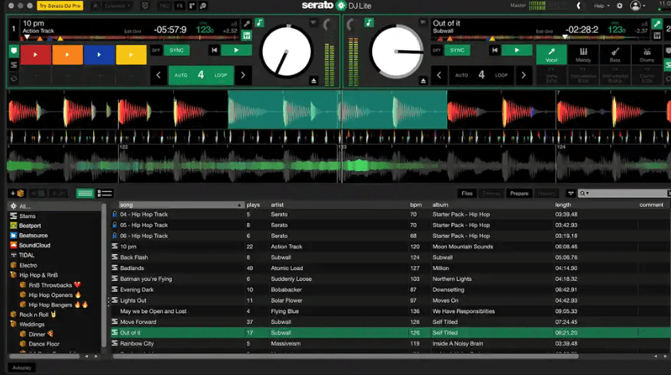
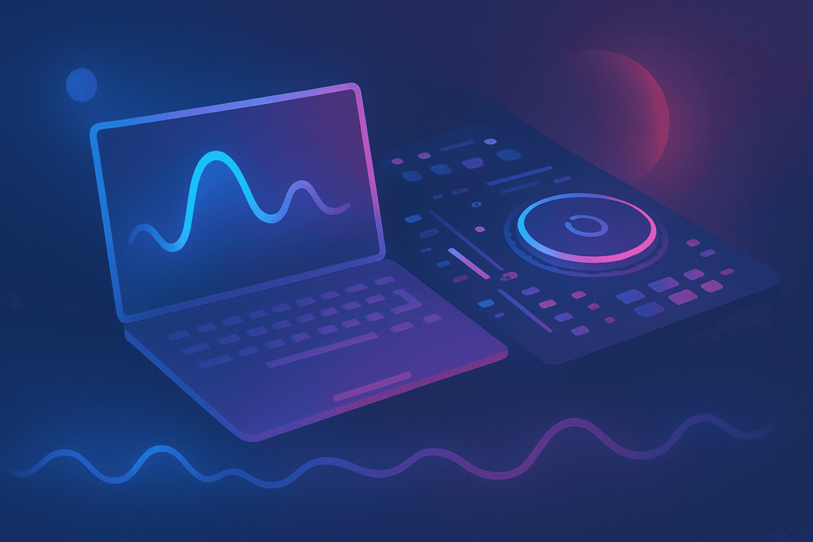

Navigating the world of DJing for the first time can be overwhelming, but choosing the best beginner DJ software is the perfect first step to launching your DJ journey.
In This Article - The Best DJ Software for Beginners
- What makes a DJ software great for beginners.
- A breakdown of the most popular DJ software options like Serato DJ Lite and Rekordbox DJ.
- How to match software with the right DJ controller and DJ gear.
- How PulseDJ.com helps beginners with the right tune selection.
Introducing PulseDJ : Your AI Co-Pilot for DJing
As you explore the best beginner DJ software, it’s crucial to know about the powerful tools that work alongside them. This is where PulseDJ comes in. It isn't a replacement for software like Serato DJ or Rekordbox DJ; instead, it acts as a powerful AI co-pilot that integrates directly with them to supercharge your creativity.
As a new DJ, one of the biggest challenges is knowing what track to play next. Pulse is designed to solve exactly that. Once installed, it works with your chosen DJ software (Serato, Rekordbox, Virtual DJ, Traktor, or djay Pro). Within minutes, it analyzes your play history to suggest tracks from your own music library that you typically play next - even uncovering gems you might have forgotten about.
The 4 Best DJ Software for Beginners - Reviewed
The market is full of options for beginner DJs, from free software to expensive professional suites. I've tried all of the DJ software options in my time, and these are the ones that I like the most. Most DJs have started on one of these at some point!
1) Pioneer DJ's Rekordbox - Perfect to Start a DJ Career

If your goal is to one day play in a DJ booth on Pioneer CDJs, then starting with Rekordbox DJ is a logical move. Rekordbox was my first software, and is still my main tool today! Even on the free version, you can create incredibly professional sounding mixes, and you can always upgrade for other features.
- Ecosystem Integration : Rekordbox is Pioneer DJ's proprietary software. Its biggest advantage is that it’s the industry standard for managing your music for playback on club hardware. You can prepare your sets at home, export them to a USB, and they'll work flawlessly on professional club gear. If you work with other DJs, they will also be familiar with this ecosystem - including the supported controllers.
- Features : The free plan is quite generous, offering library management and performance mode with compatible controllers. It has excellent sound quality, reliable key detection, and a clean interface. For those on a tight budget, it’s a fantastic option with pro features for your DJ sets.
My first controller was a small Pioneer unit (DDJ-FLX4) bundled with Rekordbox, and it was perfect. The simplicity allowed me to focus on the fundamentals - beatmatching by ear and understanding phrasing - without getting lost in a million menus.
2) Serato - Great for Starter DJs

You can't talk about DJ software without mentioning Serato DJ. It's one of the most popular DJ software choices among hip-hop and scratch DJs thanks to simulating vinyl decks.
- Serato DJ Lite : This is the free version and an excellent good starting point. It comes bundled with a huge range of entry-level hardware controllers. Serato Lite gives you control over two decks, basic loop controls, cue points, master output volume control and access to streaming platforms. It’s designed to get you doing basic djing right out of the box.
- Serato DJ Pro : The upgrade path. Once you've mastered the basics, the pro version unlocks advanced features like remix decks, more sound effects, and support for more professional DJ equipment. The jump from Lite to Pro feels seamless because you’re already familiar with the workflow. Many pro DJs started on the same software.
3) Virtual DJ - Cheap for New DJs

Virtual DJ has been around for ages and has evolved into an incredibly powerful and highly customizable platform. While it's interface isn't as polished and clean as other choices, it's still a popular pick for new DJs.
- Broad Compatibility: One of its greatest strengths is its compatibility with a massive range of DJ controllers - more than almost any other software. If you have an obscure controller, chances are Virtual DJ supports it.
- Innovative Features: It often leads the pack with unique features like real-time stem separation and advanced video mixing capabilities, even in its free offering for home use. For a new DJ who wants to experiment, it’s a playground of possibilities.
4) Native Instruments' Traktor - A Fan Favorite

Traktor DJ, developed by Native Instruments, is a favorite in the electronic music scene. The free version is a bit limited though, and has time restrictions.
- Creative Tools: Known for its powerful sound effects, live remixing capabilities with its Remix Decks, and features like beat jump and slip mode, Traktor Pro is built for creativity.
- Learning Curve: While incredibly powerful, its interface can have a steeper learning curve compared to Serato. However, for those who want deep customization and advanced functionality, it’s a top-notch choice.
Best Beginner DJ Software Comparison
This table compares the best DJ software for beginners.
Software
Best For
Key Features for Beginners
Any new DJ
100% Free
Works with your main software to suggest new tracks to mix in
Rekordbox
Aspiring club DJs
Free plan available
Seamless Pioneer CDJ integration, robust library management
Serato DJ Lite
Overall beginners, Scratch DJs
Free (with hardware)
User-friendly interface, great hardware integration
Virtual DJ
Tech-savvy beginners, Video DJs
Free for home use
Massive controller support, advanced features
Traktor DJ
Electronic music producers, creative DJs
Paid (Pro version)
High-quality effects, powerful remix tools
djay Pro AI
DJs using mobile devices, streaming users
Subscription
Excellent streaming integration, intuitive UI
DJs on a budget, tech enthusiasts
Free (open source DJ software)
Cross-platform, customizable, vinyl control
Other Good DJ Software For Beginner DJs
Beyond the big names, there are other great options.
- Cross DJ offers a solid experience across desktop and mobile devices. Cross DJ is another good choice for beginners.
- Algoriddim's djay Pro AI has fantastic integration with streaming platforms.
- For those who love tinkering, Mixxx is a powerful open source DJ software that is completely free.
The key is to choose software that aligns with your goals and the type of DJ app experience you want. Whether you aim to mix live in front of a crowd or just create mixes for your friends, there's a tool for you.
How To Choose DJ Software for Beginners

As a DJ, your software is your command center. It's where you organize your music library, mix your music tracks, and craft your unique sound.
When you’re just starting out, you need software that’s intuitive but also powerful enough to grow with you.
I remember my first setup; I spent weeks debating which platform to learn. The truth is, the best DJ software for you is the one that feels most natural and inspires you to practice.
It’s less about having all the features immediately and more about having a user-friendly interface that makes basic mixing fun and accessible.
Start Your DJ Journey with the Best Beginner DJ Software

Choosing your first piece of DJ software for beginners is a massive step in your djing journey. Options like Serato DJ Lite, Rekordbox, and Virtual DJ are popular for a reason - they provide a solid, reliable foundation to start DJing.
Your choice will depend on your budget, your musical style, and what kind of DJ controller you plan to use. Don't be afraid to try the lite version or free version of a few different programs to see what clicks.
I think one of the biggest things new DJs struggle with is track selection - knowing which song to play next. That's why I highly recomend PulseDJ (completely free) which works alongside your DJ software to help you pick the perfect next track.
Download PulseDJ.com today and discover how this AI DJ co-pilot can enhance your mixing skills.
‹ The Best DJ Software for Mac in 2025